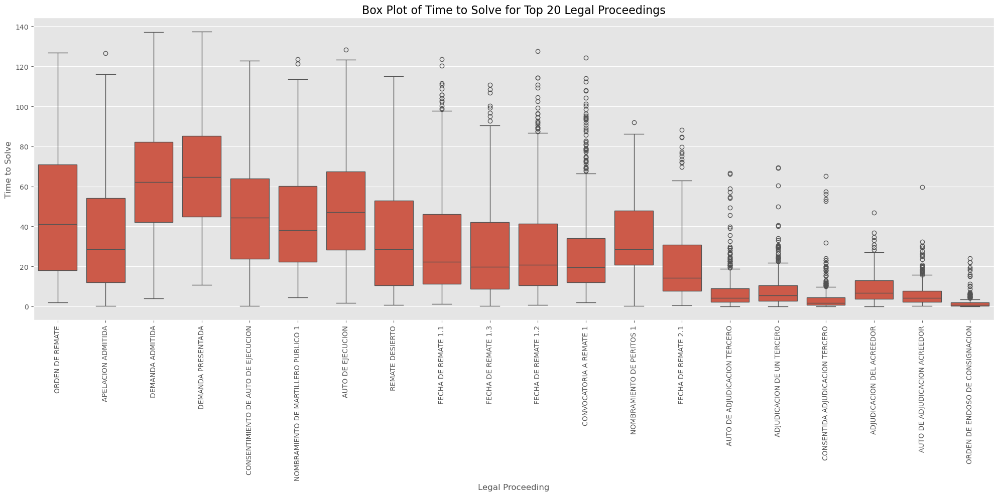

1 Summary
Our dataset is designed to manage Non-Performing Loans (NPLs) by predicting the legal resolution times of foreclosure cases, focusing on the duration of each legal proceeding. We have developed a new model that significantly improves the accuracy of these predictions, helping us better understand and manage the complexities of foreclosure processes. Given that NPLs often involve high Loan-to-Value (LTV) ratios and extended delinquency periods, accurately predicting the “time to solve” from each legal proceeding stege is critical for effective risk management and decision-making in mortgage portfolios.
Key Points:
New prediction model is about 3 times more accurate than the old one
It can explain 94% of the differences in case resolution times, up from 39%
This improvement will help us value assets more accurately and make better-informed decisions
2 Why This Matters
Knowing how long a foreclosure case will take is crucial for our business. It helps us:
1. Value our mortgage assets more accurately
2. Make better decisions about managing our portfolio
3. Plan our financial strategies more effectively
3 How We Made Predictions Before
Our old method was simple but not the most accurate:
1. We looked at past foreclosure cases
2. We calculated the average time cases took based on the type of legal proceeding
3. For new cases, we predicted the resolution time by matching it to similar past cases
3.1 Problems with the Old Method
It was often wrong by about 17 months on average
It couldn’t account for the many factors that make each case unique
It often underestimated or overestimated resolution times significantly

4 Our New Approach
We’ve adopted a more sophisticated method called a “Random Forest” model. Here’s how it works:
- It considers many factors about each case, not just the type of legal proceeding
- It learns patterns from thousands of past cases
- It makes predictions based on these learned patterns, considering multiple aspects of each new case
4.1 What We Considered in the New Model
- How long the case has been ongoing
- How many legal proceedings have happened
- How much time passes between proceedings
- The specific sequence of legal actions
- Details about the courts handling the cases
5 Results: How Much Better Is the New Model?
Our new model is significantly more accurate:
Accuracy: On average, predictions are off by only about 5 months, compared to 17 months with the old method
Reliability: The new model can explain 94% of the differences in case resolution times, up from 39%
Consistency: It handles unusual cases much better, with fewer large errors


6 What Influences Foreclosure Times the Most?
Our model found these factors to be most important in predicting resolution times:
- How long the case has been ongoing
- The number of legal proceedings that have occurred
- The specific type of legal proceedings involved
- The region where the case is being handled
7 What This Means for the Business
- Better Asset Valuation: We can more accurately estimate the value of our mortgage assets
- Improved Risk Management: We can better anticipate and plan for lengthy foreclosure processes
- Smarter Decision Making: We can make more informed choices about how to handle different cases
- Efficient Resource Allocation: We can better prioritize our efforts and resources across our portfolio
8 Recomendations
- Expand Features: Improve model accuracy by adding features like Loan-to-Value (LTV) ratios, to help predict whether a foreclosure will be resolved by a third party or creditor, along with economic indicators or more detailed geographic data..
Explore Advanced Techniques: Test advanced machine learning techniques for further improvement.
Integrate with Financial Tools: Incorporate the model’s predictions into financial systems to enhance decision-making and structure DPO agreements.
9 Conclusion
Our new foreclosure prediction model represents a significant improvement in our ability to manage mortgage portfolio. By providing more accurate and reliable predictions, it will help us make better-informed decisions, manage risks more effectively, and ultimately improve our financial performance.